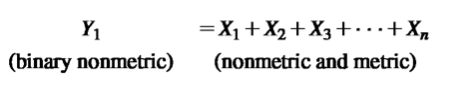
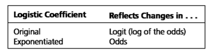
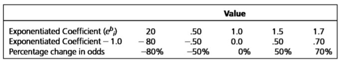
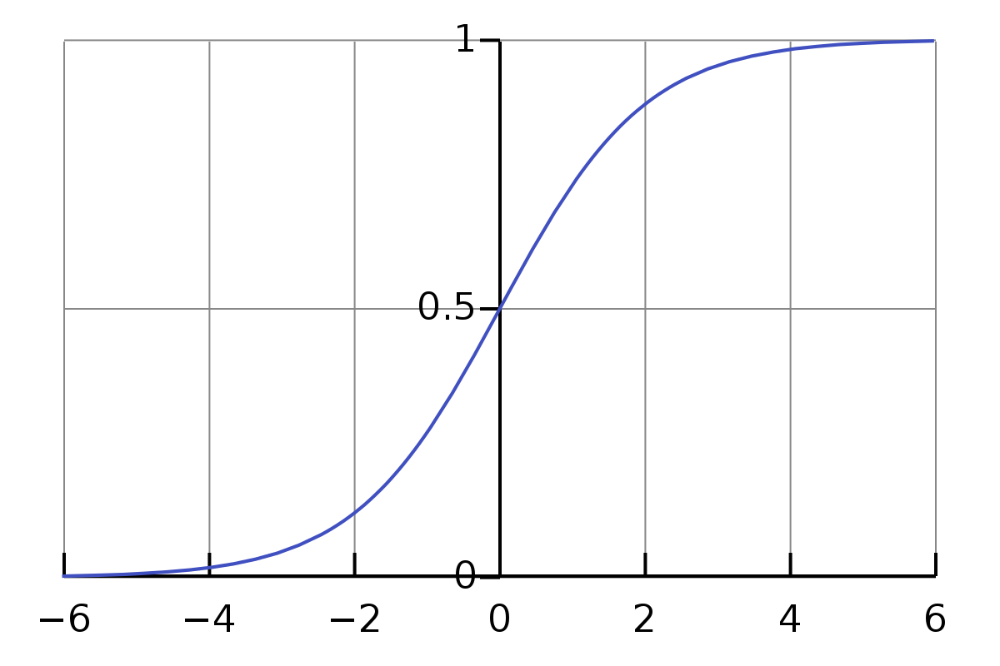
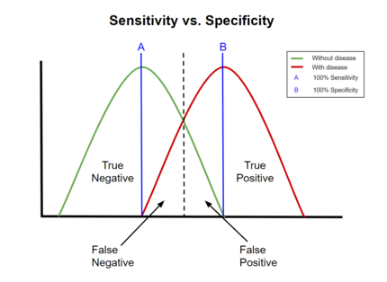

Chapter - 9 Marketing Analytics
9.1 Logistic regressions
Logistic regression: a specialized form of regression that is formulated to predict and explain a binary (two-group) categorical variable rather than a metric dependent measure. May be described as estimating the relationship between a single-non-metric binary dependent variable and a set of metric or non-metric independent variables:

Classification matrix: means of assessing the predictive ability of the logistic regression model. Created by cross-tabulating actual values with predicted values. Shows incorrect and correct classifications.
Cross-validation: Procedure of dividing the data in two parts. Avoids over fitting.
Analysis sample: Used in estimating the logistic regression model
Holdout sample (validation sample): Used to validate the results
Hit ratio: Percentage of objects correctly classified by the model.
TP + TN / N
True Positive + True Negative / Number of observations
Two types of the logistics coefficient:

Logistic coefficient: (original). A positive relationship means that an increase in independent variable is associated with an increase in the predicted probability.
A negative value implies a decrease in the predicted probability
A positive values implies a increase of the predicted probability
Value 0.0 means a probability of 50%.
Exponentiated logistic regression: stated in terms of odds. There won’t be negative values.
Coefficient -1.0 = percentage change in the odds
F.e. Coefficient of 0.20 = a negative 80 percent change in the odds –> 0.20-1.0 = -0.80 for each unit change in the independent variable
A value of 1.0 means there is no change in the odds. The odds are 50% to predict either group. There is a relationship with no direction.
A value above 1.0 means a positive increase in the predicted odds
Assessing magnitude of change:
Percentage change in odds = (Exponentiated coefficient - 1.0) * 100

Logistic curve: represent the probability of an event.

Logit transformation: transforms values into a discrete binary dependent variable –> probability of an event. This probability is transformed into the odds ratio which acts as the depend variable.
Maximum chance criteria (MCC) = Measure of predictive accuracy that is calculated as the percentage of respondents in the largest group.
- N largest group / total number of observation.
- If your hit rate is larger than this, you are having some value.Odds: the ratio of the probability of an event occurring to the probability of the event not happening. Used as the dependent variable.
Model estimation fit:
Likelihood value: the lower the -2LL, the better for of the model. Perfect fit is 0.
Pseudo R^2 measures: values from 0.0-1.0. Cox & Snell R^2 = the higher value, a greater model fit. The amount of variation accounted for by the model. 1.0 is a perfect fit model.
9.1.1 Sensitivity vs Specificity
Sensitivity = TP / TP + FN, second number
Specificity = TN / FP + TN
Hit rate = TP + TN / N
True positive rate = TP / TP + FN
Actual negative = TN / TN + FP

Validation of the results:
Establishing external validity is done through assessment of hit ratios through a separate holdout sample. It is supported when the hit ratio of the selected approach exceeds the comparison standards that represent the predictive accuracy expected by chance.
9.2 Conjoint Analytics
Quick summary
**‘Conjoint Analytics** enables us to understand, describe, and predict consumers’ choices in the contexts where the items/products/services that they have to choose among could be described based on a collection of attributes; and that individuals make a trade-off among these attributes to choose the most appealing offering.’
Products are composed of multiple attributes or features. Purchasing decisions involve complex and subtle trade-offs between different features. It is difficult to articulate the value that attribute to a particular feature in isolation.
Conjoint analytics can give a good indication of how customers perception of value is built up. It is possible to have an idea regarding the “value premium” that consumers derive from a feature. This can be applied to decision making such as which features to include to increase market share.
Customers make trade-offs in selecting a particular product configuration if:
- Different combinations of products are provided
- Customers are asked to choose
Now it is possible to learn from the relative importance of attributes.
Steps of Conjoint Analytics
- Showing customers various hypothetical product configurations and price points and asking them to evaluate them (or choose between them)
- Regression analytics is then applied to their responses to isolate the effects of individual features on the customers perception of product value
- Result: an increment “perceived value” for each of a products features
Assessing functional value
Measure customers’ overall preferences for a selected number of product configurations
Decompose these overall preferences into the values that customers attach to each level of each attribute
This can be performed through regression analytics.
Elicitation process
- Identifying the set of relevant attributes
- Assign levels to the attributes
- Combine levels to generate profiles
- Generate questions & collect data
A product configuration is composed of one specific level for each of the attribute in the bundle where. Attributes must be relevant to the consumers choices and be easy to measure.
Profile is a combinations of levels.
As an example we take a pizza where:
Attributes –> cheese, crust, toppings
Levels -> Topping = tuna, mushroom, salami. Crust = thick or thin etc.
Profile -> Pizza with mozzarella cheese, tuna and a thick crust
The amounts of profiles possible are the configurations.
Each categorical variable is transformed into dummy variables where 0 indicates not chosen while 1 indicates chosen. This leads to a regression model for consumer preferences. Applying to the example of a pizza:
Score: \(U = b_0 + b_1MOZ+b_2THIN+b_3TUN+b_4SALAM\)
Conjoint analytics works when consumers choice decision process is a compensatory process where a highly valued option on one attribute can compensate for an unattractive option on another attribute.
After calculating the betas for the regression model, we can evaluate what attributes are more important to the individual respondent. This can then be used to crate benefit segments to group individuals on the basis of the utilities they attach to different product attributes. Hereby cluster analytics is used to create the benefit segments using the attribute importance.
The last step is to use this information to:
Estimate the most cost-efficient way to deliver a desired set of features
Identify the “sweet spots” where margin is maximized
Obtain the optimal configuration of functionalities to best compete in a target segment
Apply to product re-featuring, product line extension
Setting up the survey
In the full factorial design, all possible combinations of attributes and levels are asked to the consumer. However, there might be too many profiles to question and retrieve relative answers. It should be under 20 combinations.
A method to subset these profiles is:
Fractional factorial design: Ratings are only asked on a scientifically selected fraction of combinations
Orthogonal design
Adaptive design
Different method of asking how to value the profiles such as:
- Ranking
- Metric conjoint: Ratings
- Choice-based conjoint (CBC)
You should include the option of no choice in the choice method.
The amount of choice tasks should not exceed 20 and be ideally less than 15 if possible.
The consumer choses the product based on the highest utility.
9.2.1 Random utility model
The choice behavior of individuals is based on the random utility model (RUM). Each alternative generates a utility for the individual.
Let us denote by \(U_i\) that utility that the profile \(i\) generates to the individual. In this case, in a choice task with the choice set: \(C = [i,j]\), the respondent will choose \(i\) if \(U_i > U_j\).
The utility can be decomposed into two main components
A deterministic part that explains the contribution of different observable attributes to the choices
A random component that simply is the difference between the “true” utility of the profile for the individual and the deterministic part
This leads to: \(U_i = V_i + e_i\)
The random component is due to additional factors that influence choices that are not observable to the analyst. Therefore, the preferences are based on choice probabilities.
\(Pr(i|i,j) = Pr(U_i > U_j) = Pr(V_i+e_i>V_j+e_j) = Pr(e_j-e_i<V_i-V_j)\)
Different choice models will be derived by making different assumptions on the distribution of the random component.
Choice models
Probit model = A conventional assumption on the random term in the above model is to assume that \(e_i\) and \(e_j\) are distributed normally.
Logit model = Can be derived by assuming Extreme Value of Type I (EV) distribution on ε, and by assuming that the random components are independent from each other.
Example using the logit model for a hotel:
\(U = 12 + 15*Gym + 10*SwimmingPool - 20*Price150\)
Here the baseline for price 100. Therefore, the difference going from a price 100 to price 150 (50 euros increase) is a decrease in utilities of 20 units. Moreover, the equivalent of having a gym is 15 unites of utility.
The monetary equivalence of having a gym is therefore = \((15*50)/20=€35\)
In other words, by including a gym in the offer, the hotel can charge €35 more.